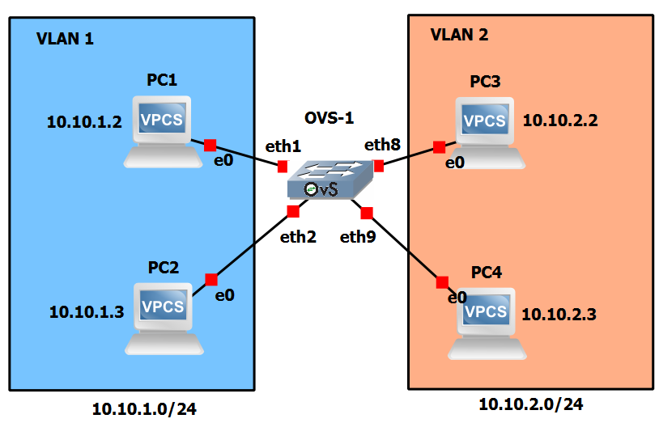
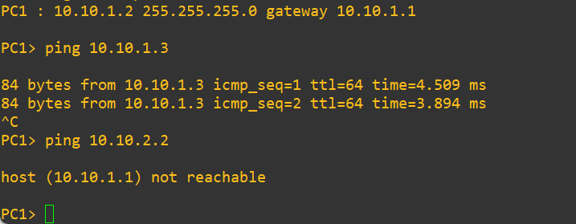

Lab #13
Open vSwitch: A switch with two VLANs
The purpose of this lab is to show how to manage VLANs in a Open vSwitch (OVS).
This lab replicates Lab #9 by replacing GNS3's built-in switch with an Open vSwitch Docker container.
Preparation steps
This lab requires the GNS3 VM to instantiate Docker containers of Linux-based routers.
In particular, it requires that you have have previously imported the Open vSwitch (OVS) appliance into GNS3 as described below.
Open vSwitch is a multilayer (MLS) virtual switch licensed under the open-source Apache 2.0 license. We can add OVS to GNS3 very quickly using a GNS3 OVS appliance.
- Download and locally save the Open vSwitch management GNS3 appliance definition from the GNS3 marketplace.
We recommend to use this appliance that creates an OVS switch with the eth0 interface used for management and all other interfaces connected to the br0 internal software bridge.
- Import the appliance into GNS3 by choosing the File ==> "Import appliance" menu option and selecting the previously downloaded openvswitch-management.gns3a file and then choosing to "Install the appliance into the GNS3 VM".
The OVS icon will appear in the "Switches" device category in GNS3.
We also customized the device icon (this step is purely esthetic and hence optional).
Experiment steps
- Create the following topology in GNS3. Choose the "GNS3 VM" server to instantiate all the devices of this lab.

- Start all devices.
- Open the Auxiliary Console of switch OVS-1 and execute the following commands:
ovs-vsctl set port eth1 tag=1
ovs-vsctl set port eth2 tag=1
ovs-vsctl set port eth8 tag=2
ovs-vsctl set port eth9 tag=2
- Open PC1 terminal and execute the command:
ip 10.10.1.2/24 10.10.1.1
- Open PC2 terminal and execute the command:
ip 10.10.1.3/24 10.10.1.1
- Open PC3 terminal and execute the command:
ip 10.10.2.2/24 10.10.2.1
- Open PC4 terminal and execute the command:
ip 10.10.2.3/24 10.10.2.1
Notice that PC1 and PC2 are configured with a default gateway address 10.10.1.1, but, in fact, this address is not associated to any device.
Likewise, PC3 and PC4 are configured with a default gateway address 10.10.2.1, but, in fact, this address is not associated to any device.
Traffic generation
In PC1 terminal execute the following commands:
ping 10.10.1.3
ping 10.10.2.2
and verify that answers are received from PC2 but NOT from PC3.

In PC3 terminal execute the command:
ping 10.10.2.3
ping 10.10.1.2
and verify that answers are received from PC4 but NOT from PC1.
Since there is no inter-VLAN routing, the two VLANs are isolated.
Hence, PC1 can only ping PC2, while PC3 can only ping PC4.
Return to list of labs
Copyright (c) 2024 - Roberto Canonico
Last updated: October 4, 2024 by Roberto Canonico